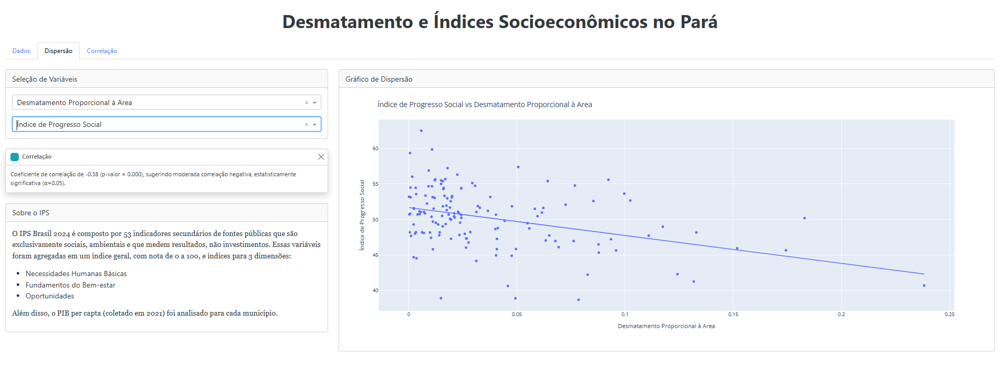

Relatório Preliminar: Desmatamento e Índices Socioeconômicos no Pará
Introdução
Este relatório preliminar descreve a análise exploratória realizada sobre os dados de desmatamento nos municípios do estado do Pará e sua intersecção com indicadores socioeconômicos. O objetivo principal é identificar padrões e correlações potenciais entre a extensão do desmatamento, ocorrido entre 2008 e 2023, e variáveis que refletem o desenvolvimento social e econômico local.
Escolha dos Dados e Metodologia de Aquisição
Para esta análise, foram selecionadas fontes de dados públicas e reconhecidas, visando garantir a robustez e a replicabilidade dos resultados.
Fontes de Dados
- Dados de Desmatamento: Utilizaram-se os incrementos anuais de desmatamento provenientes do projeto PRODES, disponibilizados pelo Instituto Nacional de Pesquisas Espaciais (INPE) através da plataforma TerraBrasilis. Estes dados são shapefiles que representam os polígonos de desmatamento detectados anualmente.
- Limites Municipais: Os shapefiles contendo os limites dos municípios do estado do Pará foram obtidos junto ao Instituto Brasileiro de Geografia e Estatística (IBGE).
- Indicadores Socioeconômicos: Foram empregados os dados do Índice de Progresso Social (IPS) Brasil, uma iniciativa do Social Progress Imperative. O IPS Brasil fornece uma medida multidimensional do desenvolvimento social para todos os municípios brasileiros, baseada em 53 indicadores secundários de fontes públicas, agrupados em três dimensões principais: Necessidades Humanas Básicas, Fundamentos do Bem-estar e Oportunidades. Além do índice geral, foram considerados o PIB per capita municipal.
Metodologia de Aquisição e Processamento
O processo de aquisição e integração dos dados seguiu as seguintes etapas:
- Cruzamento Espacial: Os polígonos de desmatamento anual (2008-2023) foram espacialmente cruzados com os limites dos municípios do Pará. Isso permitiu atribuir cada área desmatada ao respectivo município onde ocorreu.
- Agregação por Município: Após o cruzamento, a área desmatada foi agregada (somada) para cada município e para cada ano do período analisado.
- Definição da Métrica de Desmatamento Proporcional: Para permitir uma comparação mais equitativa entre municípios de diferentes tamanhos, foi calculada uma métrica de “desmatamento proporcional”. Esta métrica consiste na razão entre a área total desmatada em cada município (acumulado de 2008 a 2023) e a área total do respectivo município.
- Integração com Dados Socioeconômicos: A tabela resultante, contendo o desmatamento proporcional por município, foi então unida aos dados do IPS Brasil e ao PIB per capita, utilizando o código IBGE do município como chave de ligação.
Principais Insights da Análise Exploratória
A análise exploratória dos dados integrados revelou alguns insights preliminares importantes:
Desmatamento Proporcional e PIB per Capita: Verificou-se uma aparente falta de correlação significativa entre o percentual de área desmatada nos municípios e o Produto Interno Bruto (PIB) per capita. Este achado sugere, inicialmente, que um maior ou menor índice de desmatamento acumulado no período analisado não teve um impacto direto e claro no crescimento econômico ou no enriquecimento médio dos cidadãos locais, quando medido pelo PIB per capita.
Desmatamento Proporcional e Indicadores Sociais (IPS): Observou-se uma correlação negativa de magnitude moderada entre o desmatamento proporcional e os indicadores de progresso social (Índice de Progresso Social geral e suas dimensões).
Estes são resultados preliminares e indicam a necessidade de investigações mais aprofundadas e modelagens estatísticas para confirmar e detalhar essas relações.
Dashboard Interativo para Visualização dos Dados
Para facilitar a exploração e comunicação dos resultados, foi desenvolvido um dashboard interativo. Esta ferramenta permite a visualização dinâmica das relações entre o desmatamento e os indicadores socioeconômicos nos municípios do Pará.
Visualizações Principais do Dashboard
A seguir, são apresentadas algumas das visualizações disponíveis no dashboard:
Figura 1: Análise de Dispersão e Correlação

Descrição: Esta visualização permite selecionar diferentes variáveis socioeconômicas e analisar sua correlação com o desmatamento proporcional à área do município. O exemplo acima mostra a correlação entre o Índice de Progresso Social e o Desmatamento Proporcional à Área.
Figura 2: Série Temporal do Desmatamento e Ranking Municipal
Descrição: Apresenta a evolução do desmatamento total (em km²) ao longo dos anos no estado do Pará, acompanhada de uma tabela que detalha os municípios com as maiores áreas desmatadas anualmente.
Figura 3: Comparativo de Indicadores e Mapa de Calor de Correlações
Descrição: Esta tela exibe um comparativo das médias dos componentes do IPS para o Pará em relação a outros contextos e um mapa de calor que resume as correlações entre todas as variáveis estudadas (desmatamento e indicadores socioeconômicos).
Referências
- INSTITUTO BRASILEIRO DE GEOGRAFIA E ESTATÍSTICA. Malhas territoriais: limites municipais filtrados por estado. Disponível em: https://www.ibge.gov.br/geociencias/organizacao-do-territorio/malhas-territoriais/15774-malhas.html. Acesso em: 08 mai. 2025.
- INSTITUTO NACIONAL DE PESQUISAS ESPACIAIS. TerraBrasilis: Yearly deforestation increments – Shapefile (since 2008). Dados do PRODES. Disponível em: https://terrabrasilis.dpi.inpe.br/en/download-files/. Acesso em: 08 mai. 2025.
- SOCIAL PROGRESS IMPERATIVE. IPS Brasil: dados de municípios. Disponível em: https://ipsbrasil.org.br/pt/explore/dados. Acesso em: 08 mai. 2025.
- SOCIAL PROGRESS IMPERATIVE. (2024). Global Social Progress Index 2024.